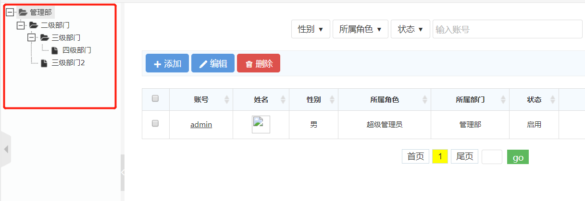

树插件默认使用的是zTree（点击查看官网API）， zTree 是一个依靠 jQuery 实现的多功能 “树插件”。优异的性能、灵活的配置、多种功能的组合是 zTree 最大优点。 · zTree v3.0 将核心代码按照功能进行了分割，不需要的代码可以不用加载 · 采用了 延迟加载 技术，上万节点轻松加载，即使在 IE6 下也能基本做到秒杀 · 兼容 IE、FireFox、Chrome、Opera、Safari 等浏览器 · 支持 JSON 数据 · 支持静态 和 Ajax 异步加载节点数据 · 支持任意更换皮肤 / 自定义图标（依靠css） · 支持极其灵活的 checkbox 或 radio 选择功能 · 提供多种事件响应回调 · 灵活的编辑（增/删/改/查）功能，可随意拖拽节点，还可以多节点拖拽哟 · 在一个页面内可同时生成多个 Tree 实例 · 简单的参数配置实现 灵活多变的功能
zTree需要引用以下文件：
在页面上建立tree模型：
然后添加以下javascript脚本：
$(document).ready(function () {
$.fn.zTree.init($("#treeDemo"), setting, zNodes);
}
$.fn.zTree.init($("#treeDemo"), setting, zNodes); treeDemo就是你那个树的id,也就是放在页面当中的这个：(<ul id ="treeDemo" class="ztree"></ul >)的id。setting是一个json对象，用来初始化zTree的配置，zNodes，树在初使化的时候加载了它，用来定义数据：
var zNodes = [
{
name: "", //节点名称
open: false, //节点是否可以展开
isParent:true //是否为文件夹
}
];
框架默认使用的是zTree的metro风格，如下图所示：
更多更详细的API 建议大家去官网阅读，这里就不再搬运了， http://www.treejs.cn/v3/api.php